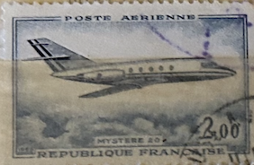
| SOURCE | TITLE| IMAGE MATCH | click to source page |
| Rakuten | Timbre Poste Aerienne Mystere 20 pas cher - Meilleures offres sur le neuf et l'occasion | 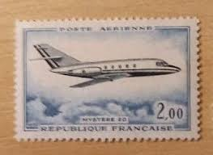 |
| CiBaFil | FRANCE 2012 Philatelic Congress (Belfort) MNH** | 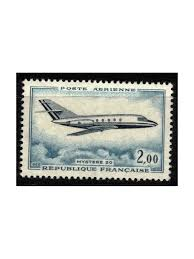 |
| UNC.UA | Аукціон для колекціонерів UNC.UA UNC.UA | 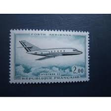 |
| Redbubble | Vintage France Mystere 20 Jet Plane Postage Stamp" Poster for Sale by red-amber65 | Redbubble | 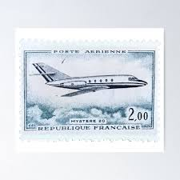 |
| PicClick FR | Timbres Cfa Réunion À VENDRE! - PicClick FR | 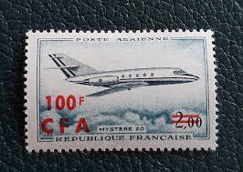 |
| Shutterstock | France Circa 1965 Stamp Printed France Stock Photo 96702937 | Shutterstock | 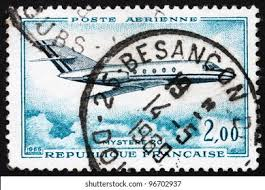 |
| eBay | T0560 - France Reunion complete set Sc#C51-52 MNH CV $7.25 | eBay | 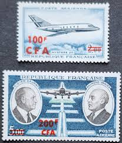 |
| eBay | MARCEL DASSAULT FAN JET FALCON EXECUTIVE AIRCRAFT L'AVION DES PRESIDENTS AD | eBay | 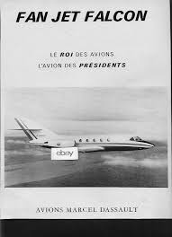 |
| eBay | 1979 FAN JET FALCON 20 PRINT AD FRENCH AIRPLANE VINTAGE PRINT AD | eBay | 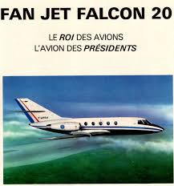 |
| The Final Battle at the End of the Runway | 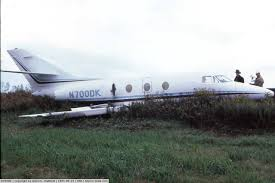 | |
| eBay | Hawker 125 | eBay | 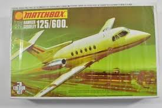 |
| One of my bought slides that I've had scanned so I don't have much info on it! What I do know is that its Da10 LX-EPA & the photo is taken at | 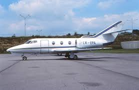 | |
| Airport-Data.com | Aircraft Data N257W, 1977 Dassault Falcon 10 C/N 119 | 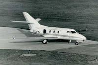 |
| Planespotters.net | 9H-SSG | 9HSSG | Planespotters.net | Planespotters.net | 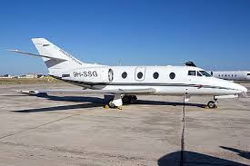 |
| The Box Art Den | Dassault Falcon 20T-960 | 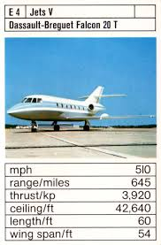 |
| Wikimedia.org | File:Fred Olsen Dassault Falcon.jpg - Wikimedia Commons | 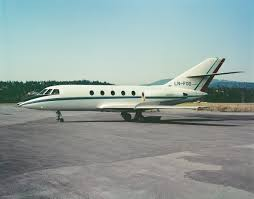 |
| JetPhotos | D-CMET/DCMET aviation photos on JetPhotos | 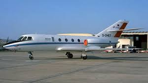 |
| AirHistory.net | Aircraft Photo of F-GDLR | Dassault Falcon 10 | AirHistory.net #621565 | 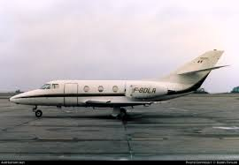 |
| University of Leeds | High Resolution Modelling of Atmospheric Chemistry and Transport | 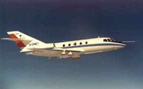 |
| Matchbox-Hawker-Siddeley-125-600_Roy-Huxley | 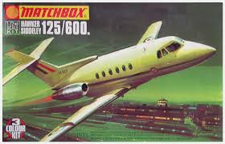 | |
| Sydney Airport Message Board | A Different View Of Sydney - Page 7 - Sydney Airport Message Board | 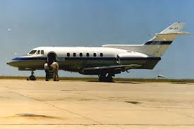 |
| Cybermodeler Online | Dassault Falcon 20 Photo Gallery | 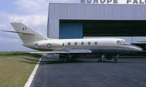 |
| University of Wisconsin–Madison | Airplane at the Racine Airport - UWDC - UW-Madison Libraries | 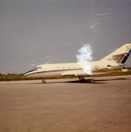 |
| ABPic | Aviation photographs of Registration: F-BSQU : ABPic | 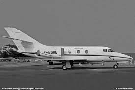 |
| Mistercola | Vintage playing card ANHEUSER BUSCH eagle logo corporate jet pictured – Mistercola | 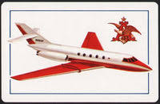 |
| Planespotters.net | F-GOPM | FGOPM | Most Popular Photos | Planespotters.net | Planespotters.net | 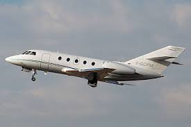 |
| AirHistory.net | Aircraft Photo of C-GFCS | Dassault Falcon 10 | AirHistory.net #676981 | 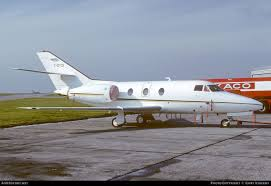 |
| Aviapages | N174B Falcon 10 - Club Jet Charter, LLC owned by S/N 142 | 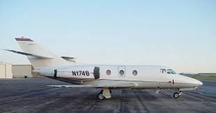 |
| aviator.nl | Dassault Mystère 20 photos | 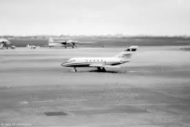 |
| IMS Vintage Photos | ALTITUDE PASSENGERS THEIR BRUSSELS JETS NATIONAL BUSINESSMEN EQUIPPED | 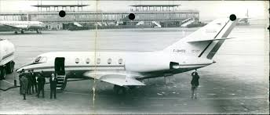 |
| AirHistory.net | Aircraft Photo of 483 | Dassault Falcon 20SNA | France - Air Force | AirHistory.net #297578 | 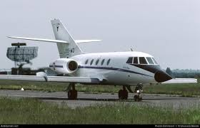 |
| ABPic | Aviation photographs of Registration: I-FLYK : ABPic | 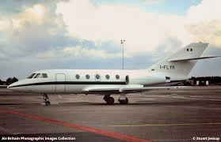 |
| Flickr | Ole Johan Beck | Flickr | 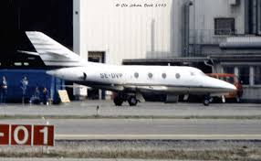 |
| AirHistory.net | Aircraft Photo of EC-CTV | Dassault Falcon 20E | AirHistory.net #554383 | 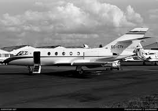 |
| Media Storehouse | Dassault Falcon 20C Print, Baltimore Airport, February 1967. Art Prints, Posters & Puzzles from Mary Evans | 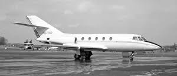 |
| Aviation - Dassault Falcon 20C , 5A-DAG, operated by Libyan Arab Airlines photographed at Luqa Airport, 4th January, 1973 (Godfrey Mangion / Aviation MT) | Facebook | 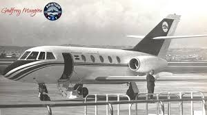 | |
| ABPic | Aviation photographs of Registration: F-BTMF : ABPic | 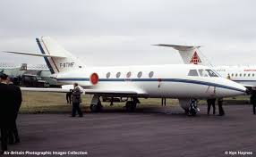 |
| Airways Museum | HS125 VH-CAO | 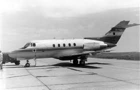 |
| JetPhotos | PR-FDE/PRFDE aviation photos on JetPhotos | 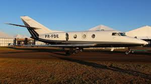 |
| eBay | PC AVIATION AIRCARFT G.A.M. DASSAULT MYSTERE 20 REAL PHOTO (a42096) | eBay | 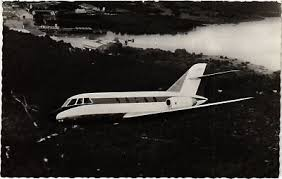 |
| Aircraft Reports | Dassault Falcon Fan Jet Aircraft Aircraft Operating Manual , ( English Language ) - Aircraft Reports - Aircraft Manuals - Aircraft Helicopter Engines Propellers Blueprints Publications | 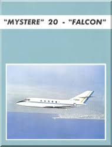 |
| Planespotters.net | 9H-SSG | 9HSSG | Latest Photos | Planespotters.net | Planespotters.net | 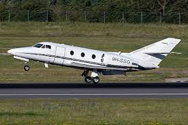 |
| ABPic | Aviation photographs of Registration: I-SNAM : ABPic | 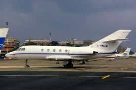 |
| AirHistory.net | Aircraft Photo of CN-MBH | Dassault Falcon 20E | Morocco - Air Force | AirHistory.net #179523 | 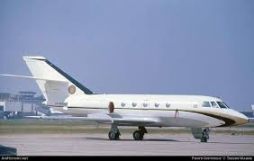 |
| Robb Report | How Dassault's Falcon 20 Launched a New Era of Business Jets | 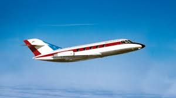 |
| AirHistory.net | Aircraft Photo of HB-VDP | Dassault Falcon 20E | AirHistory.net #10986 | 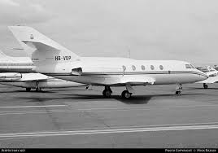 |
| AbeBooks | Air Pictorial Magazine: Journal of the Air League: Collection of 27 issues. Uninterrupted run from June 1967 (Vol. 29, No. 6) to August 1969 (Vol. 31, No.8) by David Dorrell (Ed.): (1967) | 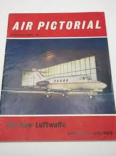 |
| Aircraft Recognition Guide | Aérospatiale Corvette - Aircraft Recognition Guide | 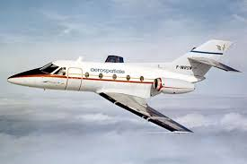 |
| AOPA | The Hawker line - AOPA | 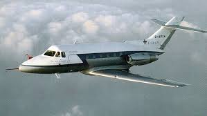 |
| Flymall | Kraemer Aviation Services: Flymall Wheels & Wings June 2018 Newsletter | Flymall Flymall Wheels & Wings June 2018 Newsletter | Just another WordPress weblog | |
| jetvip | Dassault Aviation Falcon 50 EX N77ME — private jet charter, price | JETVIP | |
| IMCDb.org | IMCDb.org: "Avalanche Express, 1979": cars, bikes, trucks and other vehicles | |
| Planespotters.net | F-GEDB Untitled Dassault Falcon 100 Photo by LEDUC Bertrand | ID 1749214 | Planespotters.net | Planespotters.net | |
| Aircraft.com | C-FICA | 1982 DASSAULT FALCON 100 on Aircraft.com | |
| FlightAware | N108KC (1974 DASSAULT-BREGUET FALCON 10 owned by V1VR LLC) Aircraft Registration - FlightAware | |
| Flickr | UshuaiaRetro.com.ar | Flickr | |
| Wikimedia.org | File:Dassault Falcon 20C, Portugal - Air Force JP6350837.jpg - Wikimedia Commons | |
| Aircraft Resource Center | 1/144 J-Bot 41-28 Dassault CC-117 | |
| IPMS Canada | July 2020 Edition |
{kind=link}
{kind=link}